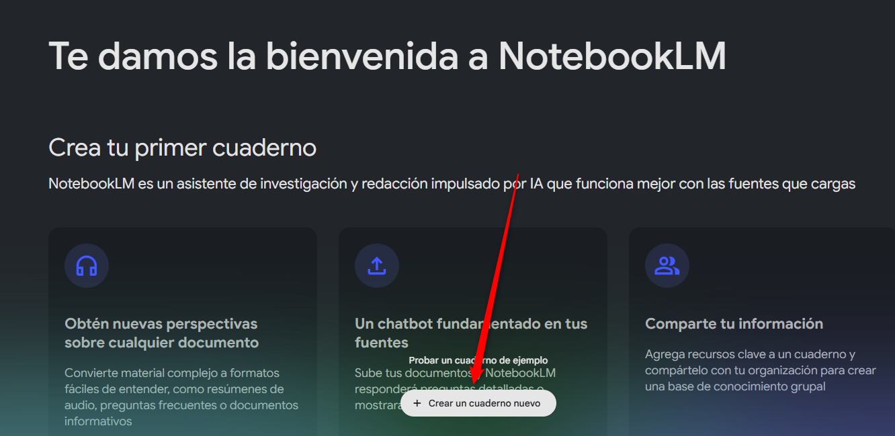
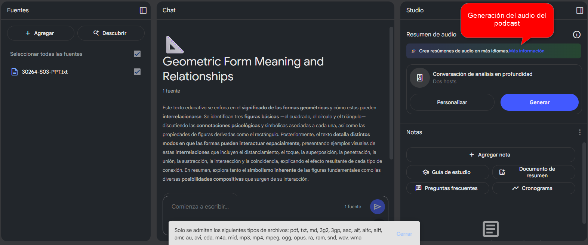

Sandbox Inteligente – SESIÓN 3 / Prácticas con IA
EJERCICIO 1 · Producir Infografía en ChatGPT

Producto final
Infografía vertical con 4 bloques (icono + título + texto de 1 línea) sobre: 1) Máquina de vapor 2) Telar mecánico 3) Ferrocarril 4) Iluminación pública
Herramienta
ChatGPT para proponer diseño y texto.
¿Cómo lo harás? Sigue estos pasos:
- Entra a ChatGPT
- Abre un nuevo chat
- Haz clic en New chat.
- Pega tu solicitud
- Copia y pega este mensaje en la caja de texto de ChatGPT:
Genera una imagen de infografía educativa vertical (800×1200 px) con estilo moderno, minimalista y en colores pastel suaves. El tema principal debe ser la Revolución Industrial. - En la parte superior, incluye el título "Revolución Industrial" con tipografía moderna y legible. - La imagen debe representar 4 hitos clave, cada uno con: • Un título corto (máximo 3 palabras) • Un texto explicativo breve (1 sola línea) • Un ícono o ilustración representativa Los 4 hitos son: - Máquina de vapor - Telar mecánico - Ferrocarril - Iluminación pública Presenta la información de forma visualmente clara y organizada, ideal para estudiantes. El diseño debe ser atractivo y fácil de leer, con uso inteligente del espacio en blanco.
- Pide mejoras
- Si algo no te convence, solicita ajustes concretos. Aquí tienes ejemplos de frases que puedes añadir a tu prompt para obtener variantes más afinadas:
- Cambia la paleta por tonos coral y menta para mayor contraste.
- Usa íconos lineales sin relleno y con trazos finos.
- Reduce cada texto explicativo a 6 palabras exactas.
- Añade una textura de papel suave al fondo pastel.
- Alinea los cuatro hitos en dos columnas equilibradas.
- Incluye un pie de página con la fuente de la información.
- Escribe la instrucción que prefieras, presiona Enter y revisa la nueva propuesta.
- Copia el resultado
- Selecciona la respuesta que más te guste y cópiala a tu documento.
EJERCICIO 2 · Guion de video + Podcast en Notebook LM

Tema
Cuidado del agua (dirigido a alumnos de secundaria).
¿Qué es un podcast?
Programa de audio que los oyentes reproducen cuando quieran (tipo "radio a demanda").
¿Qué es Notebook LM?
Libreta online con LLM integrado: escribes texto, el modelo sugiere mejoras y, con "Texto → Voz", genera audio.
¡Vamos a crear un audio genial! Guía paso a paso con NotebookLM
Sigue estos pasos para transformar un texto en un audio (como un pequeño podcast) usando dos herramientas muy útiles: ChatGPT y NotebookLM. ¡Es más fácil de lo que piensas!
- Paso 1: Crear la base de tu audio con ChatGPT
Imagina que ChatGPT es un ayudante muy creativo que te ayudará a escribir el texto (llamado "guion") para tu audio.
- ¿Qué le digo a ChatGPT? ("Prompt")
Aquí tienes una idea de instrucción para pedirle a ChatGPT que escriba tu guion. Puedes copiarla y pegarla, o cambiarla un poco si quieres.
"Eres un experto creando material educativo divertido. Necesito un guion para un video corto (de unos 60 segundos) para estudiantes de secundaria sobre el 'Cuidado del agua'. El guion debe tener unas 5 escenas o ideas principales. Para cada escena, por favor, describe qué se vería, qué se diría (o qué texto aparecería), alguna idea para una imagen o animación, y cuánto debería durar esa escena (aproximadamente 12 segundos por escena). Quiero que el tono sea positivo y que motive a los jóvenes."
- ¿Qué le digo a ChatGPT? ("Prompt")
- Paso 2: Llevar tu guion a NotebookLM
NotebookLM es como un cuaderno digital inteligente. Aquí es donde vamos a trabajar con el guion que te dio ChatGPT.
- Abre tu navegador de internet (Chrome, Firefox, etc.) y escribe la dirección: notebooklm.google.com
- Una vez dentro, busca un botón o una opción que diga "New notebook" (Nuevo cuaderno) y haz clic. 
- Ahora verás un espacio en blanco o una "nota" nueva. Este es el lugar (una "celda") donde pegarás tu guion. Simplemente haz clic derecho con tu ratón y selecciona "Pegar", o usa las teclas Ctrl+V (Cmd+V en Mac).
- Paso 3: ¡Convertir tu texto en audio! (Como magia)
Ahora vamos a pedirle a NotebookLM que lea tu guion en voz alta.
- Primero, asegúrate de que la "celda" (el recuadro) donde está tu guion esté seleccionada. Normalmente, solo necesitas hacer clic sobre ella.
- Busca un pequeño icono que suele ser tres puntitos verticales (⋮) o a veces una palabra como "Más" o "Opciones", usualmente cerca de la celda seleccionada. Haz clic ahí. 
- Se desplegará un menú. Busca la opción que dice "Text-to-speech" (que significa "Texto a Voz") y selecciónala.
- Aquí podrás elegir el tipo de voz que más te guste (por ejemplo, masculina, femenina, diferentes acentos si los hay) y también qué tan rápido quieres que hable. ¡Prueba diferentes combinaciones!
- Cuando estés listo, pulsa el botón para generar o reproducir el audio.
- Paso 4: Escuchar y Mejorar (Iterar)
A veces, el primer intento no es perfecto, ¡y no pasa nada! Escucha con atención el audio que se generó.
- ¿Qué revisar?
- ¿Dura más de los 60 segundos que querías?
- ¿La voz suena muy seria o aburrida para tu tema?
- ¿Hay alguna palabra que no se entienda bien?
- ¿Cómo arreglarlo?
- Si necesitas hacer cambios, simplemente edita el texto directamente en la celda de NotebookLM. Puedes cambiar palabras, acortar frases, etc.
- Una vez que hayas editado el texto, vuelve a generar el audio repitiendo el Paso 3 (seleccionar la celda, clic en los tres puntitos ⋮, Text-to-speech, y generar).
- Repite este proceso de escuchar, editar y volver a generar hasta que estés contento con el resultado.
- ¿Qué revisar?
¡Y eso es todo! Has aprendido a usar ChatGPT para crear un guion y NotebookLM para convertirlo en un audio y compartirlo. ¡Buen trabajo!
EJERCICIO 3 · Ayuda multimodal con Google AI Studio + Word

Producto final
Serie de capturas "antes / después" que muestran cómo seguiste las instrucciones de IA para ajustar un documento en Word.
¿Qué es IA multimodal?
Modelo que entiende texto y la imagen que subes; responde combinando ambos.
¡Domina las Imágenes en Word con la Ayuda de Google AI Studio!
¿Alguna vez has intentado poner una imagen al lado de un texto en Word y se volvió un completo desastre? ¡No te preocupes! Google AI Studio también te puede echar una mano con esto, actuando como tu asistente personal que ve tu pantalla y te guía paso a paso.
- Paso 1: Prepara tu Escenario en Word
Vamos a simular un problemita común con imágenes y texto.
- Abre Word. Inserta una imagen cualquiera en tu documento (puede ser desde archivo, o una de las imágenes de muestra de Word).
- Luego, escribe o pega un párrafo de texto al lado o debajo de la imagen. De forma predeterminada, la imagen a veces se comporta de manera extraña, separando el texto o no dejándote ponerla justo donde quieres. El objetivo es que la imagen y el texto no se vean bien juntos. Como en la siguiente imagen
- Paso 2: Haz una Captura de Pantalla (la "antes")
Necesitamos una 'foto' de cómo se ve el problema inicialmente.
- Asegúrate de que en tu captura de pantalla se vea claramente la imagen mal colocada junto al texto.
- (Recuerda: En Windows, 'Impr Pant' o 'Windows + Shift + S'. En Mac, 'Cmd + Shift + 4'.)
- Paso 3: Pide Ayuda a Google AI Studio
Ahora, le mostraremos nuestro problema a Google AI Studio.
- Ve a la página de Google AI Studio en tu navegador.
- Inicia un "Nuevo chat".
- Sube la captura de pantalla que hiciste del problema ("antes").
- Paso 4: Escribe tu Petición (el "Prompt") a AI Studio
Dile a AI Studio exactamente qué quieres lograr con tu imagen y texto.
"Estoy trabajando en Word (versión 365 en español) y tengo un problema con una imagen, como ves en la captura. Quiero que la imagen se coloque al lado de un párrafo de texto (por ejemplo, a la izquierda del texto) y que el texto fluya o se ajuste alrededor de la imagen de forma ordenada. ¿Podrías darme los pasos exactos que debo seguir en Word para configurar el ajuste de texto de la imagen y lograr esto?"
Copia esta petición y pégala en AI Studio junto a tu imagen. Este prompt es claro sobre tu programa, el problema (visible en la imagen) y tu objetivo (imagen al lado del texto, con texto fluyendo).
- Paso 5: Aplica las Sugerencias de AI Studio en Word
AI Studio analizará tu imagen y tu petición, y te dará los pasos, como por ejemplo: "Haz clic derecho en la imagen", "Selecciona 'Ajustar texto'", "Elige 'Cuadrado' o 'Estrecho'", etc.
- Vuelve a tu documento de Word.
- Sigue cuidadosamente cada uno de los pasos que AI Studio te sugirió. ¡Verás cómo la imagen empieza a colocarse donde quieres!
¡Felicitaciones!
Has completado con éxito la práctica de prompts (Sesión 2). ¡Ya puedes aplicar lo aprendido!